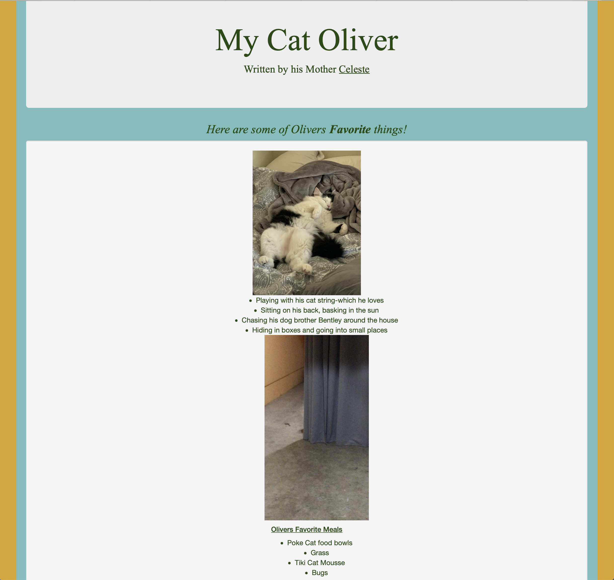
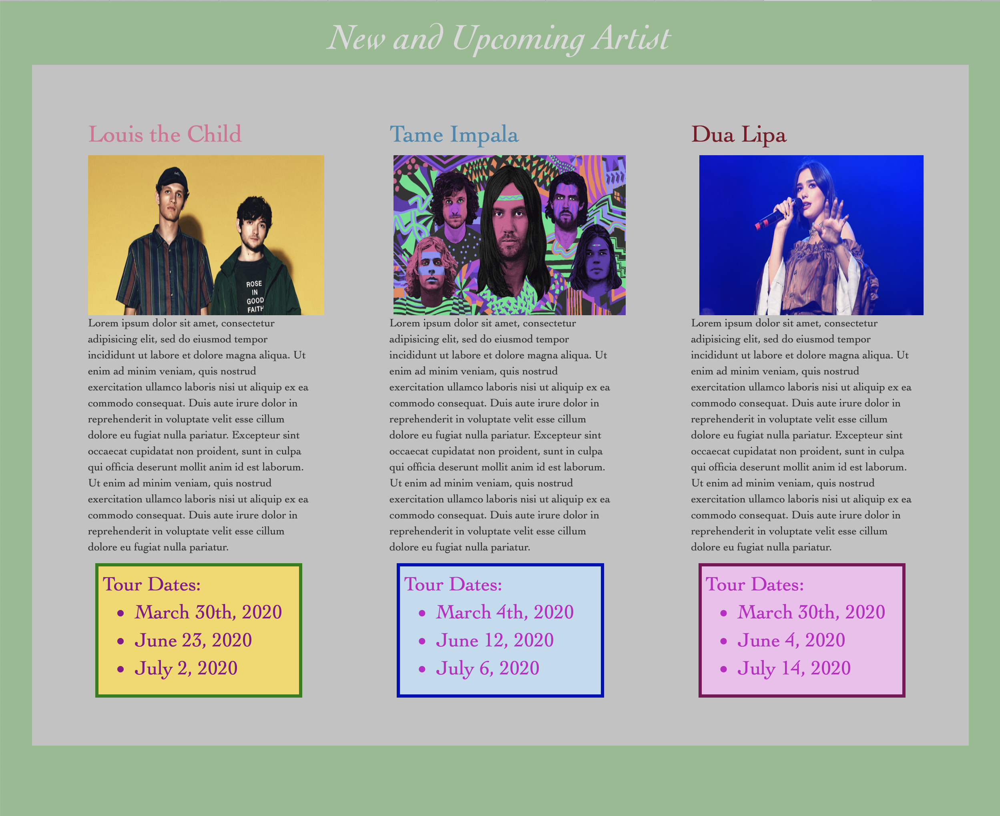
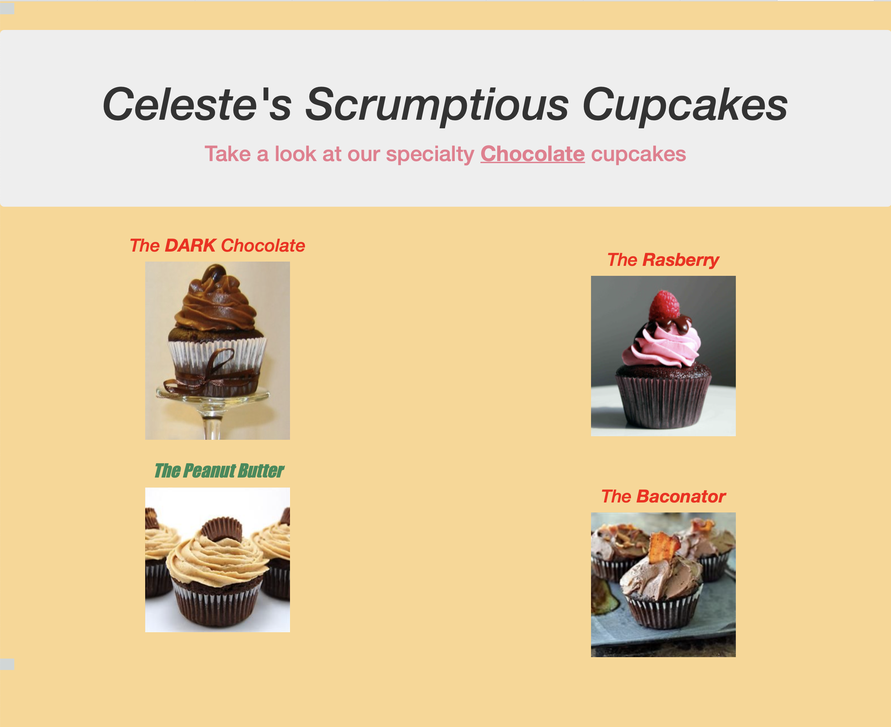
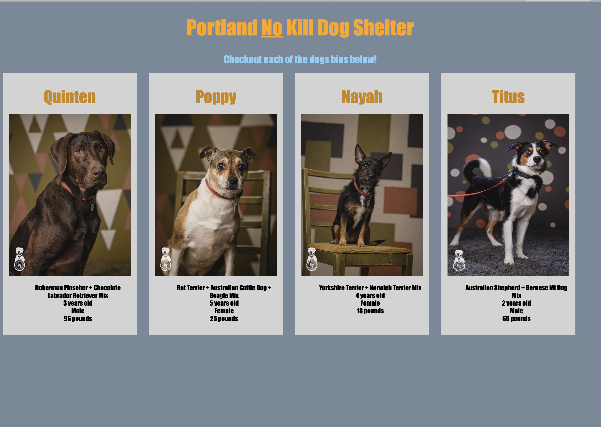

- Oliver's Page-
This is a page I created to showcase my skills using block elements. I also used Bootstrap and CSS. This page is about my furry pet oliver and al the things he loves.
- Favorite Bands Page-
In this project we used float and box models using HTMl and CSS. I later styled it with Bootstrap.This site is about my favorite bands currenlty, and their upcoming concerts.
- Favorite Hikes-

This page was created with CSS, HTML and Bootstrap. It uses simple p, h, divs and spans. It is about my favorite Oregon hikes that I have completed, and loved.
- Cupcake Shop-

This page was created using Html, CSS, and Bootstrap. This was a page to showcase my favorite types of chocolate cupcakes and to show my various decorative skills using CSS and Bootstrap.
- Animal Shelter-
This page was made using HTML, CSS, and Bootstrap. I wanted to showcase my skills in cascading and styling. This page is about a no kill dog shelter in Portland, and gives breif info on each dog available for adoption.
-
Before Epicodus I was originally in the management and cosmetology field for almost 8 years. I then went back to school to finish my degree in business management at Marylhurst University. After working in the service industry for so long it was nice to finally be able to have an office job. But even after doing office work I still did not feel challenged or stimulated at my current job, and this is why I have chosen the path of web development. I took some web development classes in college back when facebook was just coming out, and web design was much different especially css. The way it is now it so much easier, as far as reading and inputting code.
-
When not doing school full-time, I enjoy many fun outdoor activities. I have recently moved back to Portland from Central Oregon, which was an awesome place to live for many reasons. When living over there I got to expereince many new cool places to hike, and gained a new favorite pass time- going to the natural hot springs. I am really into winter sports, and enjoy snow shoeing and snowboarding. I recentley learned how to rock climb and that has been my new past time. I have two adorable pets, a pomeranian named Bentley and cat named Oliver. When not doing outdoor activities, I travel which is my number one passion. I really enjoy learning history and culture from new and exciting places. My favorite country, and a place I dream of living one day is France.